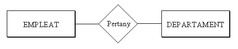
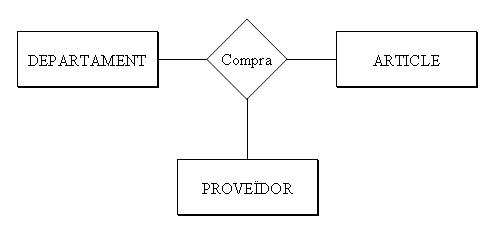
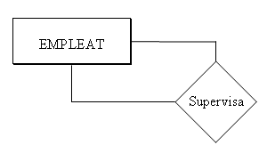
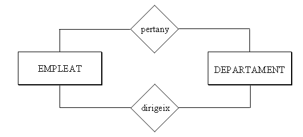
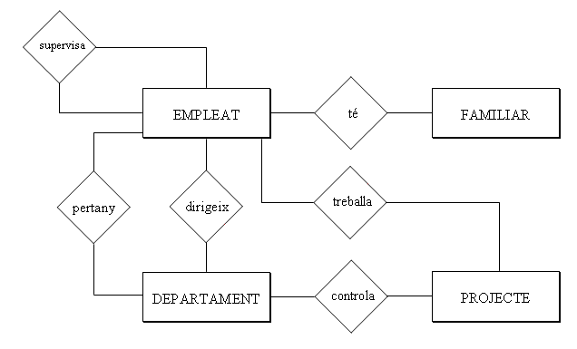
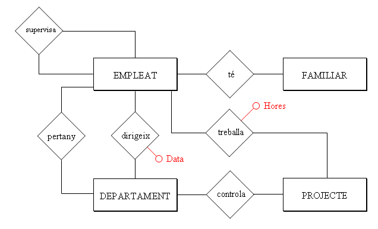
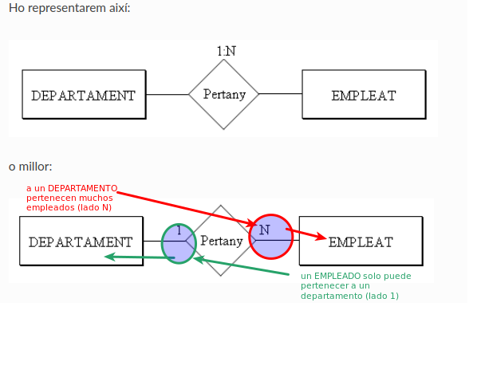
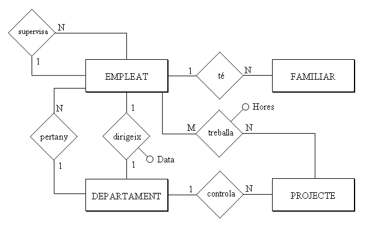

4. Las Relaciones del Modelo E/R
Todavía no hemos relacionado las entidades entre ellas, y por tanto todavía no hemos dicho que tal trabajador pertenece a tal departamento (Juan Pérez está en Contabilidad, por ejemplo), o que tal trabajador está en tal proyecto dedicándole tantas horas semanales.
4.1 Relación
Todavía no hemos relacionado las entidades entre ellas, y por tanto todavía no hemos dicho que tal trabajador pertenece a tal departamento (Juan Pérez está en Contabilidad, por ejemplo), o que tal trabajador está en tal proyecto dedicándole tantas horas semanales.
RELACIÓN es una asociación o correspondencia entre entidades.
El TIPO DE RELACIÓN será la estructura genérica, la asociación entre dos tipos de entidad, y englobará las OCURRENCIAS DE RELACIÓN, que relacionarán ocurrencias de las entidades (Juan Pérez pertenece al departamento de Contabilidad, Pilar Gomis al de Ventas, ...).
Representaremos la relación por un rombo, con el nombre de la relación en el interior. Habitualmente será un verbo que describe la relación entre las dos entidades. Uniremos el rombo con los rectángulos de las entidades por medio de líneas.
Así tendremos:

En una Relación pueden intervenir 2 entidades (Relación Binaria), 3 entidades (ternaria), o incluso más. Este número será el GRADO de la relación.
Un ejemplo de relación ternaria sería:

Y una ocurrencia de esta relación podría ser: Contabilidad compra una calculadora a Distribuciones Garcia, S.L.
También se puede dar el caso de que solo intervenga una entidad. Entonces sería reflexiva o de grado 1. Por ejemplo, los empleados tienen un supervisor, que también es un empleado de la compañía.

Por último, también se puede dar el caso de que dos entidades tengan entre ellas más de una relación. En nuestro ejemplo los empleados pertenecen a los departamentos. Pero algunos empleados dirigen los departamentos, y esta es una relación distinta a la anterior. Por eso conviene poner el nombre de la relación, para evitar confusiones.

Nota
Aplicación al ejemplo
Después de incorporar las relaciones, nuestro ejemplo quedará:

4.2 Atributos de Relación
Las relaciones también pueden tener atributos, igual que las entidades. Un atributo de relación sería el número de horas que trabaja un empleado en un proyecto, que sería un atributo de la relación trabaja. Por ejemplo Juan Pérez trabaja en el proyecto Estudio rendimiento, y le dedica 5 horas semanales. Fijaos que no es un atributo ni de empleado ni de proyecto, sino de la relación que hay entre ellas. Otro atributo de relación podría ser la fecha cuando un empleado comienza a dirigir un departamento.
Representaremos los atributos de relación como los atributos de entidad, pero ahora unidos a las relaciones.
Aplicación al ejemplo
Pondremos en rojo los atributos de relación:

4.3 Tipo de Relación o Cardinalidad
Todavía no hemos reflejado toda la realidad. Por ejemplo no hemos podido expresar que un empleado pertenece únicamente a un departamento, y en cambio puede estar en más de un proyecto.
Esto lo haremos por medio de la cardinalidad, que nos llevará a distintas clases de relaciones.
La CARDINALIDAD especifica el número de ocurrencias de una entidad que pueden intervenir en la relación por cada ocurrencia de la otra entidad.
Una ocurrencia de EMPLEADO (un empleado concreto) solo puede estar relacionado con una ocurrencia de DEPARTAMENTO (Juan Pérez pertenece a Contabilidad, y a ningún otro departamento más). En cambio una ocurrencia de DEPARTAMENTO puede estar relacionada con muchas ocurrencias de EMPLEADO (todos los que pertenecen a él). Entonces la relación PERTENECE entre DEPARTAMENTO y EMPLEADO tiene razón de cardinalidad 1:N (un departamento relacionado con muchos empleados, pero un empleado con un departamento).
Lo representaremos así:

Los distintos tipos de relaciones que puede haber son:
-
1:1 (leeremos: uno a uno) como máximo una ocurrencia de cada. Por ejemplo la relación DIRIGE (un empleado dirige como mucho un departamento, y un departamento es dirigido por un empleado).
-
1:N (leeremos: uno a ene o uno a muchos) en una entidad una ocurrencia y en la otra muchas.
-
M:N (leeremos: eme a ene o muchos a muchos) hay más de una ocurrencia en cada entidad. Por ejemplo la relación TRABAJA (un empleado puede trabajar en más de un proyecto, y en un proyecto puede trabajar más de un empleado).
Para poder distinguir esta cardinalidad nos haremos dos preguntas, resultado de fijar una ocurrencia en una entidad y ver cuántas ocurrencias se relacionan en la otra entidad. Es decir, para una ocurrencia de una, cuántas hay de la otra. En el ejemplo de más arriba:
-
A un departamento determinado, ¿cuántos empleados pueden pertenecer? (muchos).
-
Un empleado determinado, ¿a cuántos departamentos puede pertenecer? (a uno).
Estas preguntas normalmente tienen muy fácil contestación. Si hay duda deberíamos investigar mejor en las especificaciones.
Nota
La cardinalidad M:N también la podríamos representar N:N. Sencillamente quiere decir que son muchas ocurrencias de cada entidad por cada una de la otra. En estos apuntes normalmente pondré M:N, sencillamente porque "suena" mejor.
Aplicación al ejemplo
El ejemplo cada vez está más completo:

Licenciado bajo la Licencia Creative Commons Reconocimiento NoComercial CompartirIgual 3.0